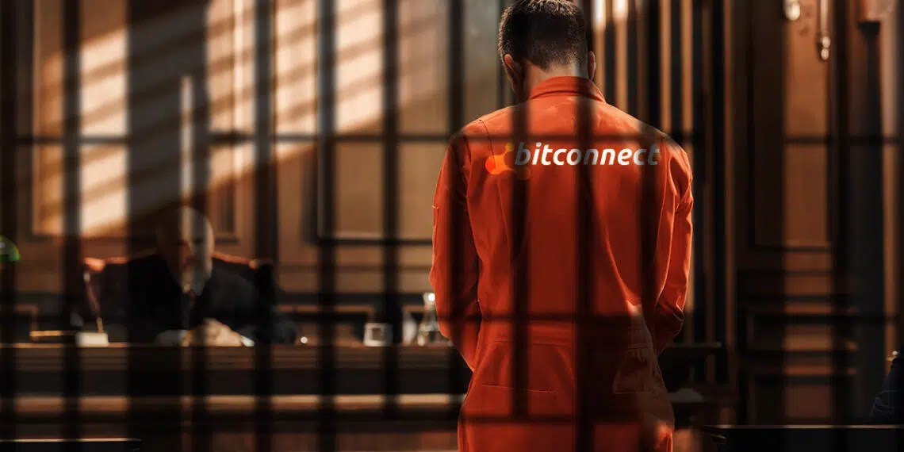

70 años de cárcel enfrentaría estafador que robó USD 2000 millones en bitcoin
El Departamento de Justicia de Estados Unidos acusó al fundador de BitConnect, Satish Kumbhani, de malversar USD 2000 millones mediante un esquema ponzi de criptomonedas que engañó a miles de víctimas bajo la fachada de un programa de préstamos.
Según el documento judicial, Kumbhani, de 36 años, dirigió una red de promotores para aumentar el precio de BitConnect Coin (BCC), cometió fraude electrónico y operó un negocio financiero sin tener la respectiva licencia. En total está acusado de diez cargos, incluyendo una conspiración por lavado de dinero internacional y si es declarado culpable de todos los cargos, enfrentará una pena máxima de 70 años de prisión.
Bajo la fachada de un «programa de préstamos», Kumbhani y sus promotores aseguraban que contaban con una supuesta tecnología patentada con la que operaban a las plataformas BitConnect Trading Bot y Volatility Software. Según ellos eran capaces de generar ganancias sustanciales, garantizando rendimientos al utilizar el dinero de los inversionistas para negociar con la volatilidad del mercado de las criptomonedas. Como se alega en la acusación, BitConnect operó como un esquema ponzi pagando a sus inversionistas más antiguos con dinero de los nuevos. En total, Kumbhani y sus cómplices se apoderaron de más de USD 2000 millones de sus víctimas.
BitConnect: una trampa para bitcoiners
Para participar en BitConnect, los inversionistas debían usar bitcoin (BTC) para comprar BCC en el Bitconnect Exchange. Por lo tanto, esta plataforma se utilizó como una trampa para captar criptomonedas. A cambio, las víctimas recibían un token con la promesa de que podrían obtener ganancias, como lo destaca el documento judicial.
La plataforma estuvo rodeada de una fuerte publicidad en las redes sociales en febrero de 2016 y, para diciembre de 2017, su moneda llegó a cotizarse por USD 463, pero posteriormente su precio se desplomó, dejando a las víctimas atrapadas en una estafa. Posteriormente, Bitconnect llegó a su fin cuando en 2018 la SEC ordenó que cesara sus operaciones.
Sin embargo, las autoridades de Estados Unidos anunciaron el año pasado que las víctimas serán compensadas con el dinero incautado al principal promotor de BitConnect, Glenn Arcaro. Esto debido a que sus tenencias en criptomonedas se hallan custodiadas en carteras digitales que maneja el gobierno estadounidense desde hace unos meses.